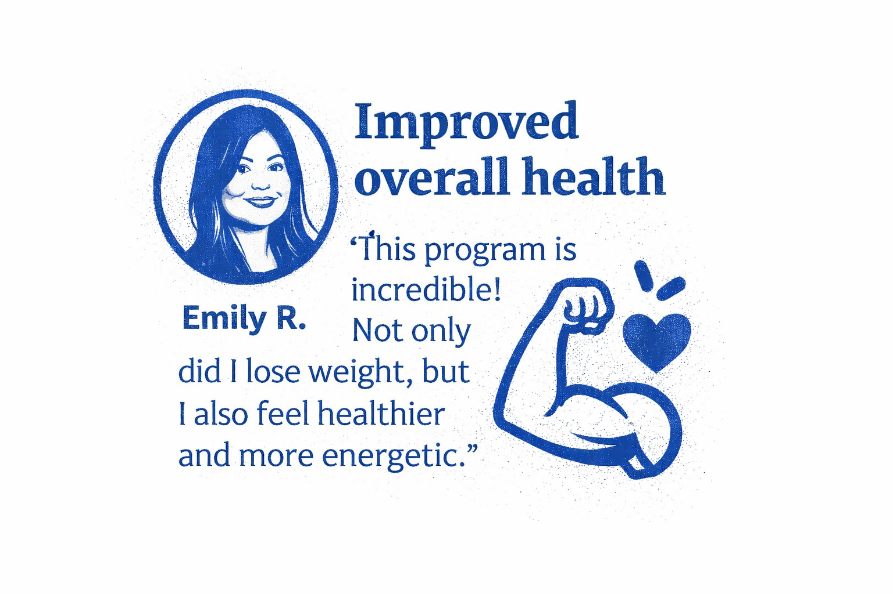
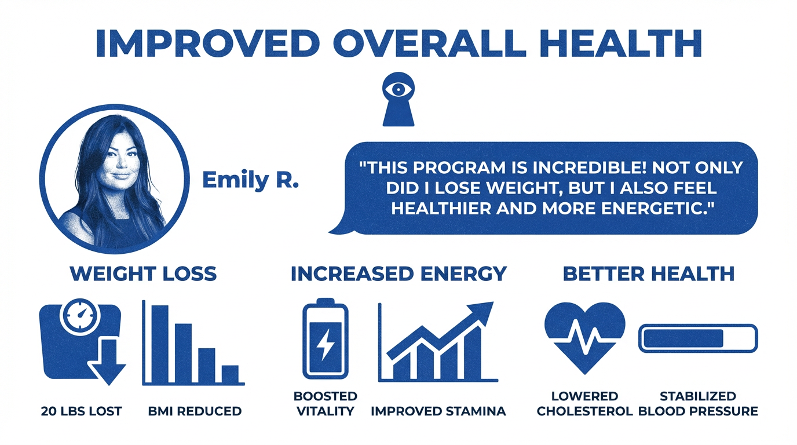
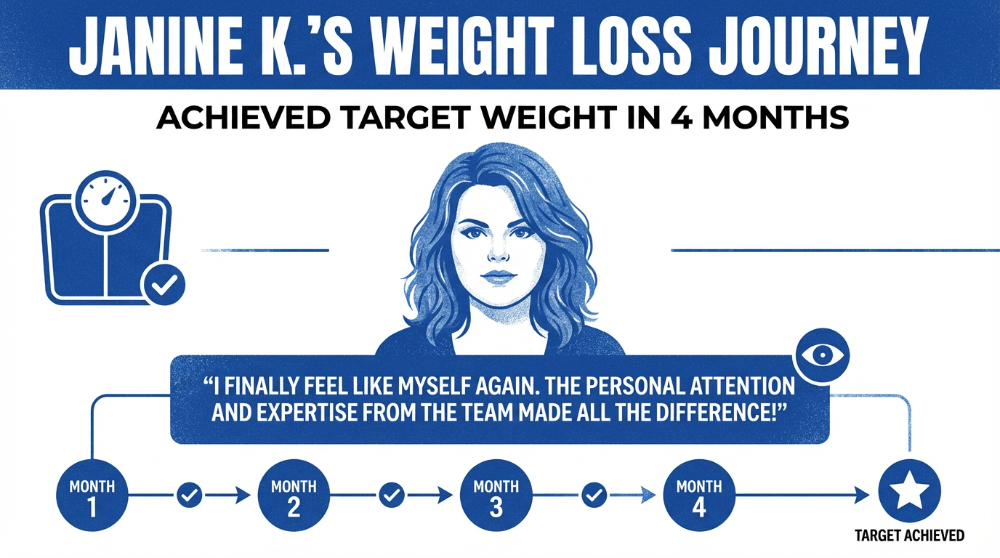
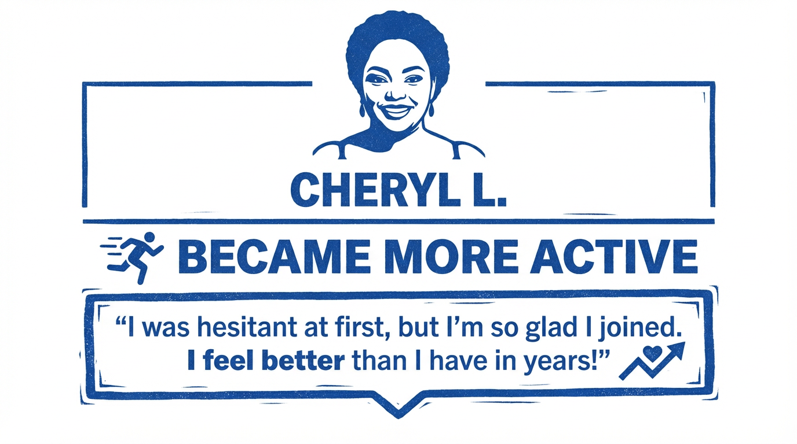

Weight Loss Davie · Davie, Florida
Feedback from individuals describing their experience with our clinic and care process.
Patients consistently describe feeling informed and supported throughout the consultation and care process — with clear communication at every stage.
Individual experiences vary. These are personal accounts shared by patients about their care journey.
"From the first consultation, I felt supported and informed. The process was clear, and I appreciated the ongoing communication throughout my care."
"I valued the personalized attention and the ability to ask questions along the way. The structure and follow-up made the experience positive."
"I appreciated the professional approach and clear expectations. The support made it easier to stay engaged throughout the process."
"I feel more confident and better informed about managing my health. The program helped me stay consistent and focused."
Structured medical oversight and individualized care supported Emily's journey toward improved health outcomes.
Patients who follow their individualized care plan often report improvements in energy, focus, and overall wellbeing over time.
Emily's experience highlights the value of provider-led care and individualized attention in achieving consistent health progress.


Janine K.'s journey demonstrates the impact of structured, provider-led care and consistent follow-up over a defined timeline.
"I finally feel like myself again. The personal attention and expertise from the team made all the difference!"
Monthly check-ins and ongoing provider communication supported Janine's progress and helped her stay on track throughout her care plan.
Consistent engagement with the care process — including follow-up visits and adherence to the individualized plan — contributed to her outcome.

Cheryl's experience reflects the importance of feeling comfortable and confident in the care environment — especially for patients who are hesitant at first.
A judgment-free, professional setting helps patients engage consistently and make meaningful progress over time.
"I was hesitant at first, but I'm so glad I joined. I feel better than I have in years!"
"I was hesitant at first, but the consultation answered my questions. The experience was straightforward and supportive."
Many patients describe initial hesitation before their first consultation. Our care process is designed to be clear, welcoming, and pressure-free from the very first visit.

Individual results and experiences vary. These accounts reflect personal patient perspectives on their care journey at Weight Loss Davie.
Outcomes depend on individual medical history, adherence to the care plan, lifestyle factors, and provider recommendations.
Provider-led medical weight loss care built around you — individualized, transparent, and accessible.
Schedule a ConsultationWhat services are available? We provide provider-led medical weight loss, weight management, and education on treatment options such as Semaglutide and Tirzepatide when clinically appropriate.
Where is care delivered? Weight Loss Davie is based in Davie, Florida in Broward County and supports patients across South Florida.
How do I start? Visit our Contact page or call (310) 408-6687 for next-step guidance.
Why patients choose us and how provider-led care works in Davie.
Read the provider profile to understand clinical background and care style.
See common questions on the FAQ page and patient perspectives on our Testimonials page.